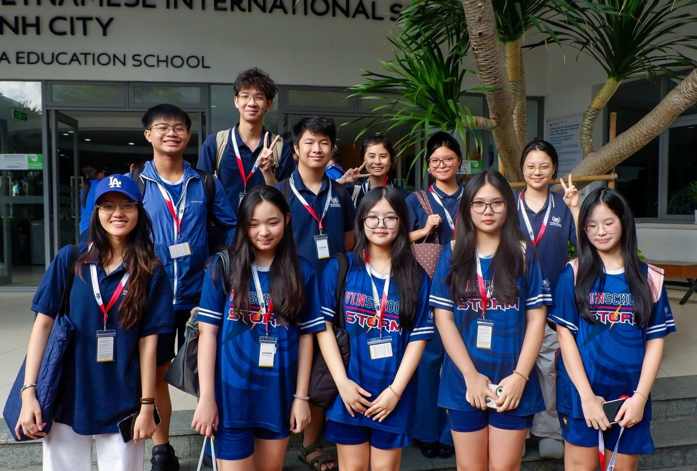
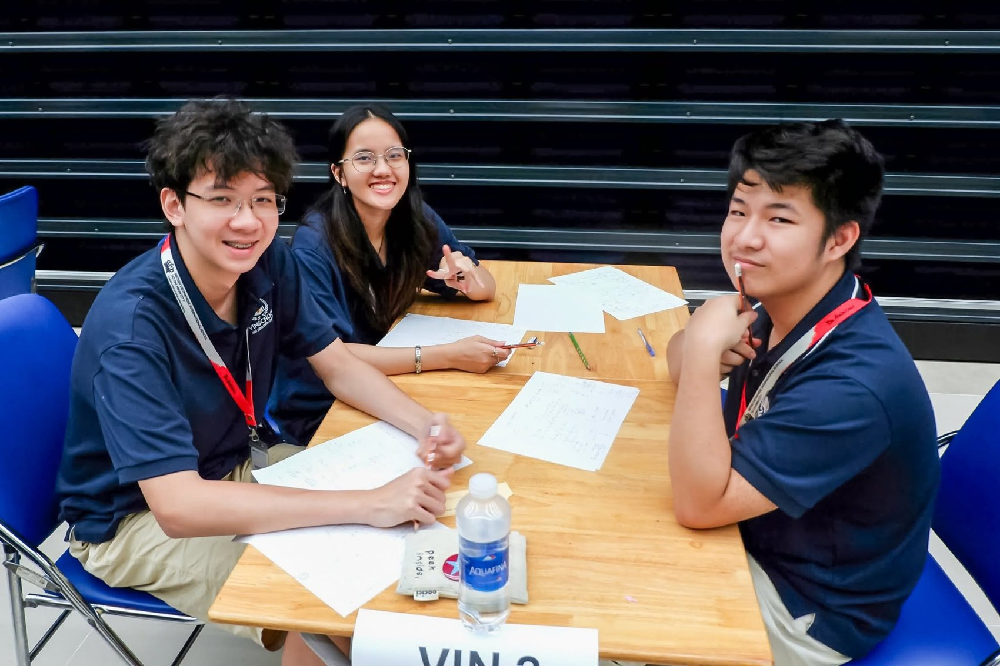
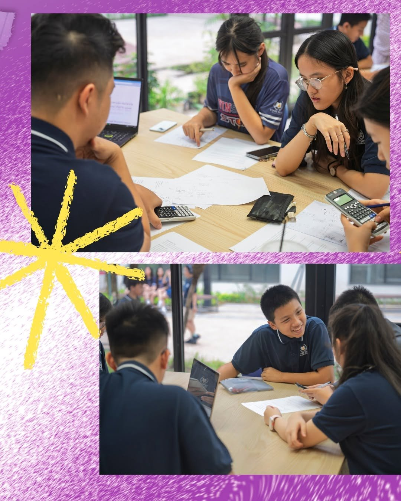
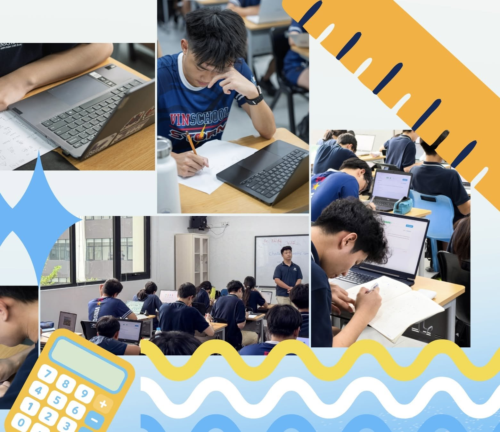

Leadership / Mathematics
Vinschool Mathematics Association (VMA)
Co-Founder & Head of Academic Specialists · Vinschool Central Park · February 2026–present
As Co-Founder and Head of Academic Specialists, I help identify mathematics competitions for students in Grades 6–12 and lead preparation sessions focused on mathematical reasoning, problem-solving strategies, and collaborative learning.



